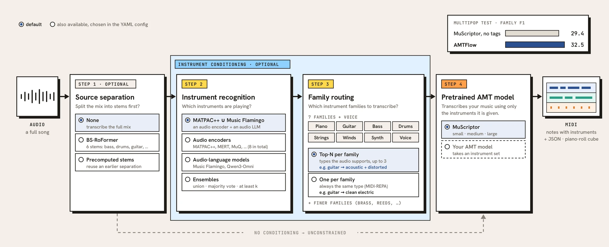
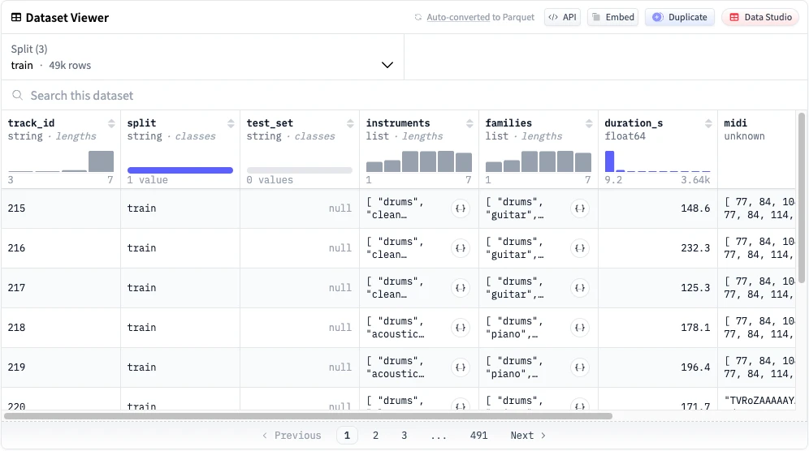
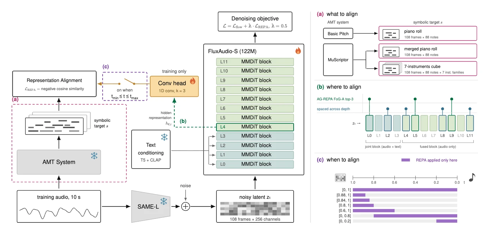

MIDI-REPA
Improving Text-to-Music Generation
with Symbolic Representation Alignment
National Taiwan University
Abstract
State-of-the-art text-to-music models increasingly rely on scaling model capacity, data, and compute, while still learning musical structure directly from dense audio. Yet melody, rhythm, harmony, and structure can be represented compactly in symbolic form. We introduce MIDI-REPA, a representation-alignment framework that derives MIDI supervision from automatic music transcription (AMT) to align intermediate representations of a flow-matching DiT. Building on the 122M-parameter FluxAudio-S baseline from the 2026 ICME Academic Text-To-Music Challenge, we investigate what, where, and when to align. Aligning a MuScriptor-derived piano roll with an early DiT layer throughout the full flow trajectory performs the best. Without additional training data or techniques, MIDI-REPA remains competitive on the ATTM objective metrics while remaining trainable on a single RTX 3090 in about 31 hours. Our results highlight symbolic supervision as a simple and inexpensive learning signal for improving text-to-music generation.
Code & Resources

Dataset
JamendoMIDI
Multi-instrument MIDI transcriptions of 51,077 instrumental Jamendo tracks. CC BY-NC-SA 4.0.

Demo Overview
We compare FluxAudio-S without a MIDI teacher (baseline) and with a MIDI teacher (ours) to illustrate the effect of symbolic supervision. MusicGen-S serves as an additional strong reference model based on the ATTM MOS results.
- Curated Examples highlight the strong generation quality achievable even under limited, noisy data and a modest training budget.
- Random Examples use prompts sampled from the combined SDD and ATTM pool with random seed = 0, offering a broader view beyond the curated selection.
Model & generation details
Ours — 122M parameters; 3,777 hrs of instrumental Jamendo music with MuScriptor AMT-derived MIDI; 1 RTX 3090; 0.3M training steps in about 31 hours.
MusicGen-S — 300M parameters; 20,000 hrs of licensed music; 32 GPUs; 1M training steps.
Baseline and ours use the same random seed (ATTM: 6798; SDD: 42) and CFG 4.5; MusicGen-S follows the official model settings: temperature 1 and CFG 3.
Curated Examples
Loading audio examples…